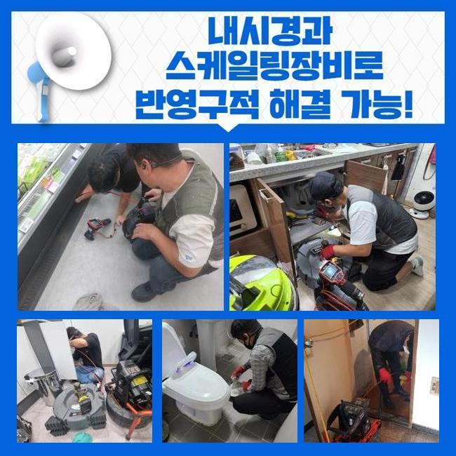
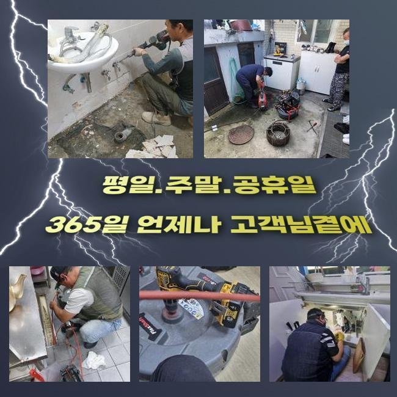
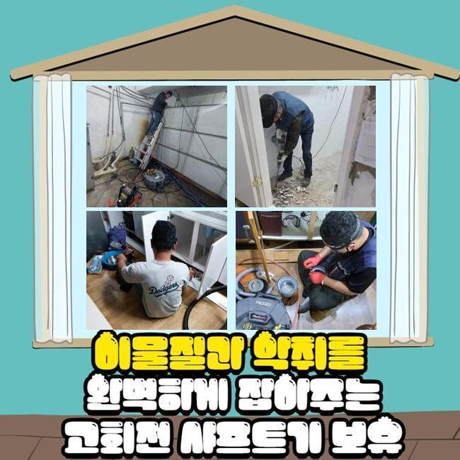
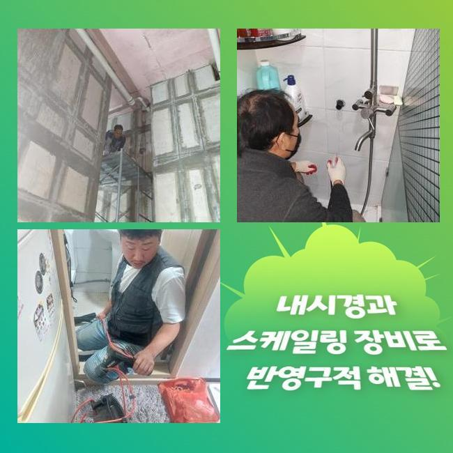
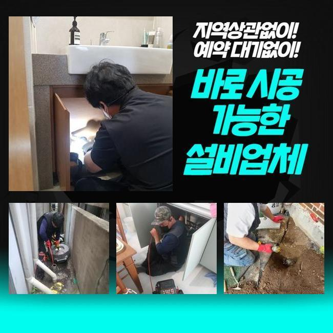
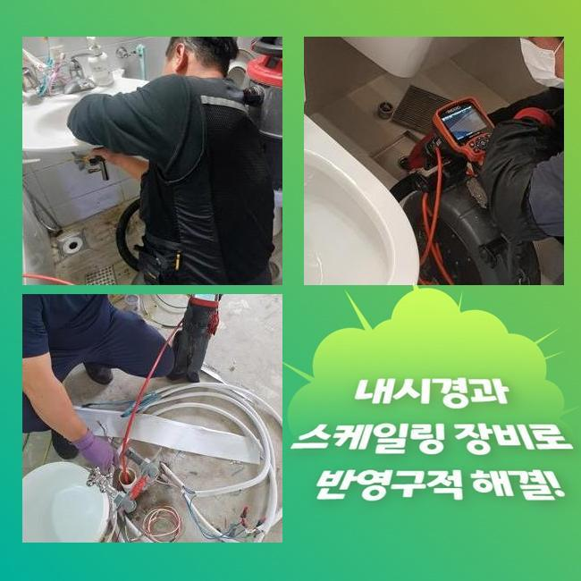
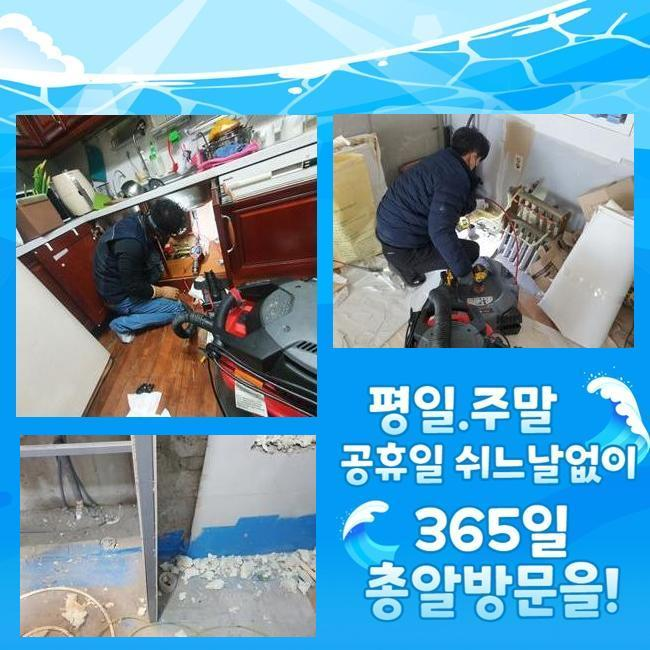

🏠 서정동하수구뚫음 비전동 맨홀막힘 누수탐지공사
용인시 처인구 배관막힘 전문 시공 후기

📋 작업 개요
- 위치: 용인시 처인구, 수원시 영통구, 화성시 동탄
- 서비스 유형: 배관막힘, 누수수리, 배관수리, 고압세척, 내시경점검
- 작업 일시:
- 업체명: 하수구수사대 (010-5615-2118)
🔍 문제 상황
서정동하수구뚫음 비전동 맨홀막힘 누수탐지공사
일반 가정에서 배수문제가 일어났다는 의뢰를 받아서 즉시 점검을 나갔습니다
하수설비 안에서 오수가 배출되면서 소량의 침전물이 섞여있는 상황일 수 밖에 없으므로 관련된 문제들이 많이 일어나고 있어요
하수관의 막힘 현상이 발견됐을때 바로 조치를 취하지 않으시는 경우 시간이 지남에 따라 순환이 힘들어지게 되면서 배수관이 역류하는 상황과 심각한 악취까지 생기면서 불편감을 느끼실 거예요
저희업체는 전문적인 노하우가 있기때문에 의뢰를 해주시면 빠르게 긴급출동하고 있습니다
현장을 방문할 때는 작업시간을 줄여주는 전문기계들로 경험이 많은 전문진이 전체진행을 모두 맡기때문에 어떠한 현장이라도 문제들을 해결해냅니다
저희 전문가가 최근 수리작업을 완료한 현장사진을 보시면서 전문 기술진은 어떠한 작업을 진행하며 문제들이 일어난 하수설비를 수리 하는건지 안내 해드릴게요
사례자의 상담전화를 전달받고 찾아간 곳은 꽤 많은 가정집이 밀집해있는 큰건물로 갑작스러운 배관막힘의 증상으로 여러 세대에 문제들이 발생하는 상황이였어요

🔎 원인 분석
💡 전문가 진단: 정밀 진단 장비를 사용하여 슬러지의 고착 여부를 판명하고 타격/세척 작업을 실시했습니다.
전화로 들은 상황을 종합해보면 간단한 일은 아니겠단걸 알 수 있었기때문에 지체될수록 피해가 커질 수 있기때문에 서둘러서 출동했습니다
저희 업체가 걱정됐던 부분들은 아래쪽의 가정집에서 역류하는 사태가 발견됐고 악취가 올라오는 일까지 동반해서 나타나고 있는 점이였습니다
다세대 건물에서 배수구 막힘사태가 발생한 경우 아랫층에서 피해들이 일어날 경우들이 많아요
메인의 하수관 같은 중요 설비장치는 건물의 하단부에 위치하기 때문이예요
문제를 진단하기 위해서 아랫층의 세대에 양해를 구하고 점검을 먼저 진행했어요
가장 쎈 강한 압력으로 물을 틀고 하수설비 안에서 빠져나가는 속력을 측정하려고 했었지만 하수라인 안쪽 면에 불순물이 가득해서 정상적으로 순환이 이루어지고 있질 못했어요
배수라인의 문제들은 확실한 이유를 찾아내서 해결하는게 매우 중요하기 때문에 막힘사고가 일어난 해당부분을 찾아내고자 내시경노즐을 활용했어요
내시경장비는 기다란 하수라인의 내면을 실제로 보면서 상황을 체크하는데 도움을 주는 기계로써 카메라를 보면서 구석구석 점검작업을 진행 해준다면 문제가 발생한 부분과 노폐물의 특성을 확인할 수 있어요

🔧 작업 과정
빠짐없이 점검을 시공하는게 가장 중요한 작업이므로 배관 내시경노즐을 전문적으로 다루는 전문가를 확인하시는게 좋은 결과를 만들 거예요
점검내용과 함께 필요한 작업을 의뢰인께 자세히 설명 드리므로 불필요한 시공비 걱정은 없으실 거예요
종합적으로 살펴보니 메인의 하수관에 불순물이 쌓여있는걸 확인했어요
중심관은 건물의 모든 하수관이 합쳐지게 되는 중심설비로서 침전물이 층을 이루다가 결국 막혀버리면 저층세대를 시작으로 문제점이 발견됩니다
메인 배관에 막힘이 발생하고 있는 경우에는 보통 사용하시는 샤프트기기만으로는 시공하기 어려워요
이런 경우에는 배수관을 강력한 압력으로 세정하는 기계를 이용해서 씻어내는 작업이 안전하고 좋은방법이예요
고압력의 세정 장비들은 독한약을 사용하지 않고 수압의 힘으로 단단한 이물질을 제거하게 되므로 배관의 피해를 최소화하는 작업이예요
설치되어 있는 모든 배수라인에 세척을 진행하는만큼 모든 침전물들이 세척되면서 원활한 통수가 가능하게 돼요
배수관 역류상황이 많이 생기게 되는 다세대 건물의 경우엔 주기적으로 고압의 세정과정을 진행하는게 예방책 중 하나입니다
미리 하수설비의 위치와 문제의 원인을 알아낸후에 강한 압력의 세척작업을 시작했습니다
배수관마다 나누어 고압세척을 진행하고 내시경장치로 모니터 해가면서 꼼꼼하게 작업과정을 완료했으며 오랜 기간 배수관 속에 딱딱하게 변해버린 침전물을 남김없이 제거했어요
마무리로 통수검사를 진행하고 확인해보니 문제없이 하수들이 배출되는 장면을 볼 수 있었어요
하수관 안쪽으로 불순물이 계속적으로 유입된다면 막힘사고처럼 큰문제로 번질 수도 있어요


✅ 작업 완료
하수설비를 사용하시면서 이상현상이 보이신다면 방치 하지말고 신속정확하게 처리하시는 것이 제일 좋습니다
저희 전문 기술진은 의뢰인께서 도움을 요청하실때 수리진행이 가능하도록 대기하고 있습니다
생활 속의 문제들로 인해 일어난 역류사태를 수리하고자 최신형의 장비들로 전문기술진과 빠르게 처리 해드리겠습니다
이와 같은 문제가 있으시다면 고민하지 마시고 편안하게 상담문의 주세요




⚠️ 하수구 배관 막힘 예방 및 관리 가이드
- ✅ 머리카락, 비닐, 물티슈 등 물에 분해되지 않는 이물질은 절대 흘려보내지 마세요.
- ✅ 기름기 많은 식기는 설거지 전 키친타올로 먼저 기름때를 닦아내세요.
- ✅ 주기적으로 배수구에 뜨거운 물을 가득 부어주어 유지방 고착을 방지하세요.
- ✅ 작업 후 1년 이내 재발 시 무상 A/S 보증 서비스를 제공합니다.
💡 핵심 정리
- 확실한 장비 작업(내시경 점검 및 샤프트 스케일링)으로 원인을 뿌리 뽑습니다.
- 작업 후 1년 이내에 동일한 부위 재발 시 100% 무상 A/S 서비스를 보장합니다.
- 서울 · 경기 · 인천 전 지역에 24시간 언제든 긴급 출동할 수 있도록 항시 대기 중입니다.
❓ 자주 묻는 질문 (FAQ)
🚨 용인시 처인구 배관막힘 문제로 고민이신가요?
정확한 원인 진단과 확실한 시공으로 재발 없는 해결을 약속드립니다.
24시간 긴급 출동 | 서울 · 경기 · 인천 전지역 | 1년 내 재발 시 무상 A/S